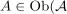
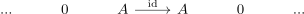

homology functor in general not conservative
1. Proposition
Let  be an abelian category,
be an abelian category,  be the category of chain complexes.
Then the homology functor is in general not conservative
be the category of chain complexes.
Then the homology functor is in general not conservative
2. Proof
Let

be an object different from the zero object. Then consider the sequence